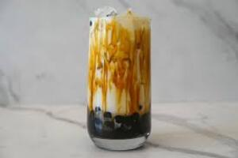
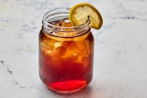

Deteksi risiko konsumsi kalori tinggi
GLISIA menggunakan teknologi sistem pakar Forward Chaining untuk menganalisis kebiasaan konsumsi kalori, karbohidrat, lemak, serta aktivitas fisik Anda.
Metabolic Tracker
Rendah⚡ Tambah Cepat
📋 Log Hari Ini
📈 Tren Kalori 7 Hari Terakhir
Tips Sehat Hari Ini
💡 Ganti minuman manis dengan air putih atau infused water untuk mengurangi asupan kalori kosong harian.
Evidence untuk Sistem Pakar
🔥 Kalori harian: 0 kkal
🧈 Lemak harian: 0 g
🍚 Karbohidrat harian: 0 g
Kalori Tersembunyi di Balik Minuman Populer
Minuman manis mengandung kalori kosong yang tinggi. Satu gelas minuman manis bisa mengandung kalori setara dengan satu porsi nasi! Lihat perbandingannya di bawah ini.

Brown Sugar Boba
450 kkal ≈ 2 porsi nasi putih. Kalori sangat tinggi dalam satu sajian.

Sweet Iced Tea
150 kkal ≈ ¾ porsi nasi. Kalori cukup signifikan.
Energy Drink
160 kkal ≈ ¾ porsi nasi. Kalori tinggi untuk minuman energi.
Kenapa Monitoring Konsumsi Kalori Itu Penting?
Konsumsi kalori berlebih (terutama dari karbohidrat sederhana dan lemak jenuh) tidak hanya menyebabkan kenaikan berat badan, tetapi juga memicu resistensi insulin, diabetes, dan penyakit jantung.
Lonjakan Energi Instan
Kalori dari minuman manis dan makanan tinggi gula diserap sangat cepat, menyebabkan lonjakan energi sesaat yang diikuti kelelahan.
Resistensi Insulin
Kebiasaan konsumsi kalori berlebihan (terutama dari karbohidrat olahan) memaksa pankreas bekerja terlalu keras, meningkatkan risiko Diabetes Melitus Tipe 2.
Sindrom Metabolik
Kelebihan kalori berkontribusi pada tekanan darah tinggi, lemak perut, dan risiko penyakit jantung.
Cara Kerja Sistem Pakar GLISIA
Kami menggunakan metode Forward Chaining untuk menelusuri data konsumsi kalori, karbohidrat, lemak, dan aktivitas Anda.
Input Fakta
Anda memasukkan data makanan/minuman yang dikonsumsi (kalori, karbohidrat, lemak) serta aktivitas fisik.
Pencocokan Aturan
Sistem mencocokkan dengan basis aturan IF-THEN yang disusun berdasarkan pedoman WHO dan Kemenkes RI.
Kesimpulan & Rekomendasi
Anda mendapat tingkat risiko konsumsi kalori berlebih + rekomendasi perubahan pola makan dan aktivitas.
Contoh Aturan Sistem Pakar GLISIA (Deteksi Kalori Tinggi)
Berikut adalah beberapa contoh aturan IF-THEN yang digunakan dalam mesin inferensi:
"IF karbohidrat > 350g/hari AND aktivitas = ringan THEN risiko_kalori = TINGGI"
Konsumsi karbohidrat berlebih dengan kurang gerak meningkatkan risiko kelebihan kalori dan gangguan metabolik.
"IF kalori > 2500 kkal AND BMI > 25 THEN risiko_kalori = SEDANG"
Kelebihan kalori dan kelebihan berat badan meningkatkan risiko metabolik.
"IF kalori < 2000 kkal AND aktivitas = sedang AND BMI normal THEN risiko_kalori = RENDAH"
Pola makan terkendali, aktif bergerak, dan berat ideal menekan dampak kelebihan kalori.
Siap mengetahui tingkat risiko konsumsi kalori Anda?
Hanya butuh waktu 3 menit untuk mendapatkan analisis mendalam dan langkah yang tepat untuk mengurangi kebiasaan konsumsi kalori berlebih.